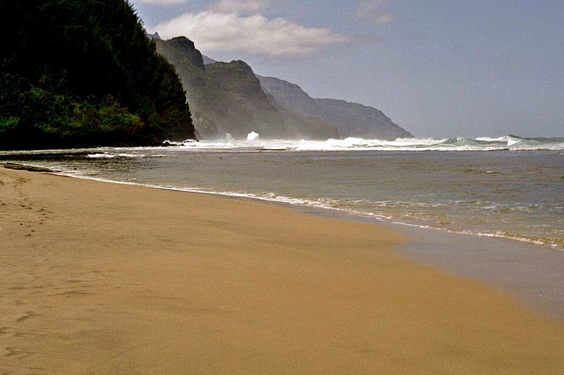

Keʻe Beach
Place: Keʻe Beach, Hāʻena, Kauaʻi
Type: Beach / cultural landscape / trailhead
Story it tells: A remote north shore beach associated with Hawaiian mythology, hula traditions, and the beginning of the Nā Pali Coast.

Keʻe Beach is located at the western end of the road on Kauaʻi’s north shore within Hāʻena State Park. The name Keʻe is commonly translated as “avoidance,” a meaning tied in Hawaiian tradition to distance, difficulty, and separation. The beach marks the beginning of the Nā Pali Coast and serves as the starting point for the Kalalau Trail, where the steep cliffs of Kauaʻi quickly isolate the coastline from the rest of the island.
Keʻe is deeply connected to Hawaiian moʻolelo involving Pele, Hiʻiaka, and Lohiʻau, one of the most important narratives in Hawaiian tradition. According to the story, Hiʻiaka traveled from Hawaiʻi Island to Kauaʻi to retrieve Pele’s lover Lohiʻau, a chief associated with this area of Kauaʻi. The journey became one of loyalty, jealousy, resurrection, and reconciliation, connecting Keʻe and the surrounding cliffs to larger stories involving the akua (gods) and the spiritual geography of the islands.
The area was also historically associated with hula traditions and sacred sites connected to Laka, the goddess of hula. Near the base of Makana Mountain were heiau and training grounds where practitioners gathered to learn chants, dance, and ceremony. Keʻe formed part of a broader cultural landscape tied to storytelling, ritual practice, and the transmission of knowledge along Kauaʻi’s north shore.
Today, Keʻe Beach is known for its reef lagoon, snorkeling, sunsets, and dramatic scenery beneath the cliffs of the Nā Pali Coast. At the same time, the beach continues to carry deeper associations with isolation, journeying, and Hawaiian tradition. As both the end of the road and the beginning of the Nā Pali coastline, Keʻe remains one of the most symbolically powerful landscapes on Kauaʻi.